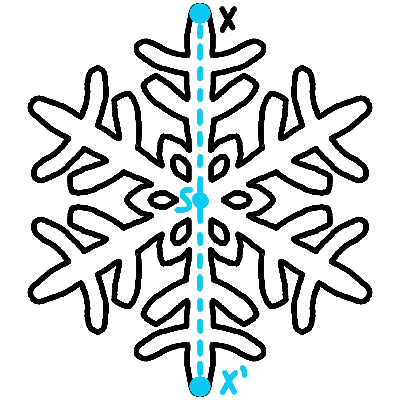
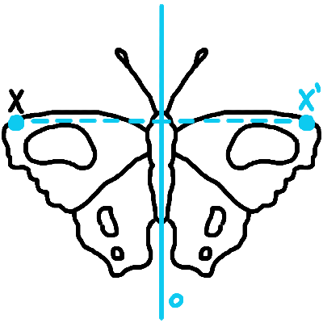
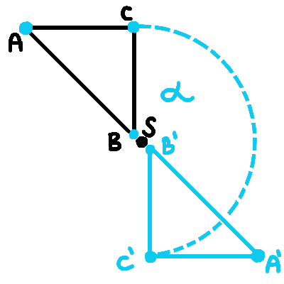
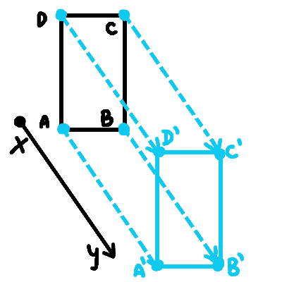

Zhodné zobrazenia
Zobrazenie v matematike je predpis, ktorý priraďuje každému prvku z jednej množiny práve jeden prvok
z druhej množiny.
Zobrazenie v rovine priraďuje každému bodu X roviny práve jeden bod X' roviny.
Zhodným zobrazením je vtedy, keď dvom rôznym bodom X, Y priradí body X', Y' tak, že úsečky XY a X'Y'
sú zhodné.
Medzi zhodné zobrazenia v rovine patrí osová súmernosť, stredová súmernosť, posunutie, otočenie.
stredová súmernosť
Stredová súmernosť podľa bodu S priradí každému bodu X v rovine taký bod X', že bod S bude stredom
úsečky XX'.
Niekedy sa nazýva aj zrkadlový obraz.
Niekedy sa nazýva aj zrkadlový obraz.

osová súmernosť
Pri osovej súmernosti podľa osi o priradíme bodu X taký bod X', že oba body budú ležať na kolmici k
osi o a stred úsečky XX' bude ležať na osi o.

otočenie
Nech je daný bod S a orientovaný uhol α.
Otočenie určené bodom S a uhlom α je také zobrazenie, ktoré každému bodu X priradí bod X' tak, že vzdialenosť |SX| bude rovnaká ako |SX'| a uhol XSX' bude zhodný s orientovaným uhlom α.
Otáčaniu niekedy hovoríme aj rotácia.
Otočenie určené bodom S a uhlom α je také zobrazenie, ktoré každému bodu X priradí bod X' tak, že vzdialenosť |SX| bude rovnaká ako |SX'| a uhol XSX' bude zhodný s orientovaným uhlom α.
Otáčaniu niekedy hovoríme aj rotácia.

posunutie
Nech AB je orientovaná úsečka, posunutie, nazývané aj translácia, je zobrazenie, ktoré každému bodu
X priradí bod X' tak, že orientované úsečky AB a XX' budú rovnako dlhé a súhlasne orientované.
